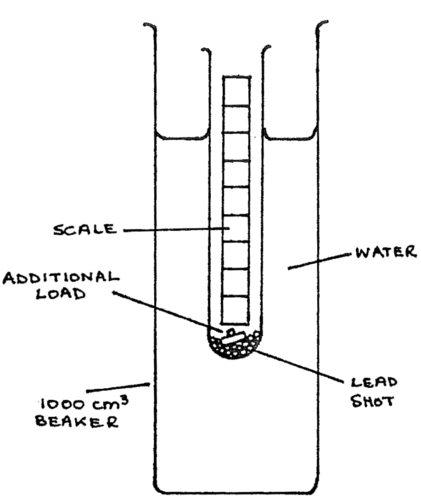
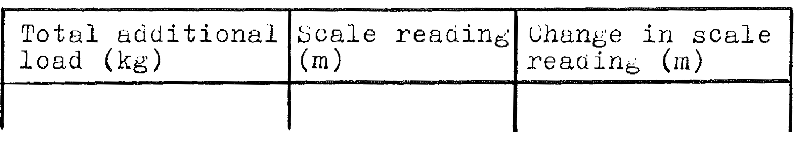

B5-3: Finding \(g\) Using a Loaded Test Tube¶
Apparatus¶

A wide test tube with a millimetre scale inside; a deep 1000ml beaker; some lead shot; two 2g masses; two 5g masses; triple beam balance; stopwatch; water or other liquid; graph paper
Procedure¶
- Use the triple beam balance to find the mass of the test tube filled with some lead shot. Add or subtract lead shot to make the total mass 50g.
- Place the tube in the liquid filled beaker. The tube should float vertically. If it does not, add more lead shot until the tube floats vertically and record the new mass of the tube and lead shot. Record the initial scale reading of the liquid relative to the tube as measured on the scale inside the tube. At this point the total additional load is 0.
- One at a time add the additional loads of 2g and 5g to the tube. After adding each mass record the liquid level on the scale inside the tube and record the total additional load.
- Take out the 2g and 5g masses. Lift the tube 1.5cm above its equilibrium position then drop it to start it oscillating. Measure the time for 5 oscillations. This is easiest if you start the stopwatch at the top of the oscillation and count “zero” when you start the stopwatch. Count each oscillation and stop the watch on “five.” Do this six different times and find the average result.
Observations¶
\(M\) = mass of the tube + lead shot \(=\) ____ kg
Tabulate:

6 measurements of time for 5 oscillations:
1. ____ 2. ____ 3. ____ 4. ____ 5. ____ 6. ____
Average time of 5 oscillations: _____ s
Period of oscillation \(= T = \frac{\text{Avg. time for 5 oscillations}}{5}=\) _____ s
Theory¶
The upward force on the tube when it is pushed a distance \(x\) below the equilibrium position is \(\frac{x}{n} g\), where \(n\) is the depth of immersion per load you will graph, and \(g\) is the acceleration due to gravity. When the loaded test tube of total mass \(M\) is oscillating, the equation of motion is:
\[Ma = -\frac{g}{n} x \quad \text{or,} \quad a = -\frac{g}{Mn} x\]
From the general equation for simple harmonic motion:
\[a = -\omega^2 x \quad \text{ hence: } \quad \omega^2 = \frac{g}{Mn}\]
and the period of motion is:
\[T = \frac{2\pi}{\omega} = 2\pi \sqrt{\frac{Mn}{g}}\]
Analysis¶
- Graph the change in level of the tube vs. total additional load. Find the slope, \(n\), of the graph.
- Show your calculation for \(g\).
- Does your value for \(g\) seem correct? If not, account for errors in your experiment.